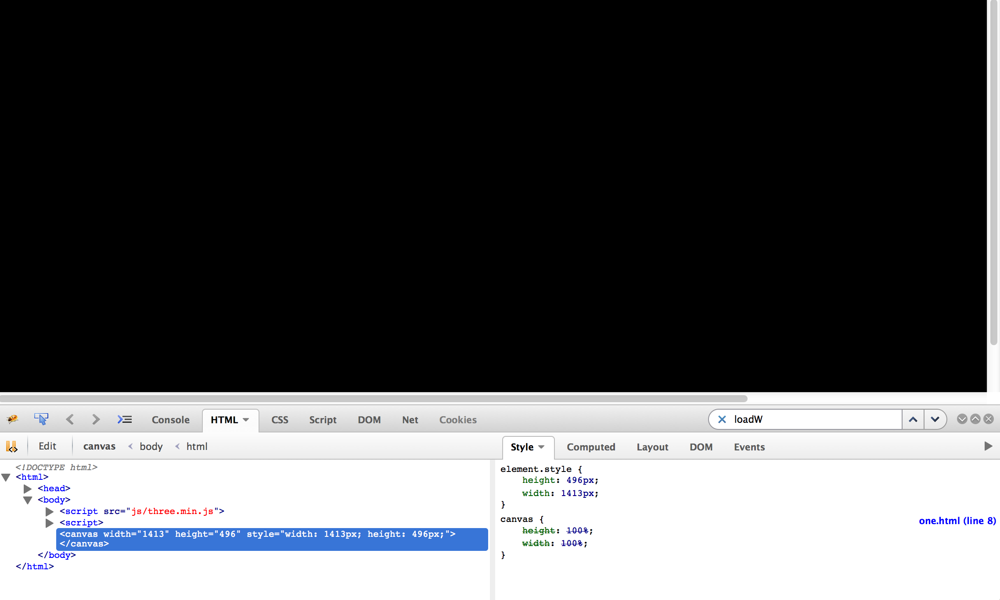

thomas.mccauley@cern.ch
@tpmccauley
University of Notre Dame, USA
THREE.js
Check if WebGL is enabled:
Minimal page
There are 3 essentials: scene, camera, renderer
Add a scene and a camera
Add a renderer
That was underwhelming. What gives?
The canvas is there. We just haven't added anything to the scene yet:
Add a cube to the scene
Better, but it doesn't do much does it?
Add some controls and change to wireframe
Change from wireframe
Change the material
Add an ambient light
Add a directional light (with an axis helper to remind us of the direction)
Add a texture
Let's animate